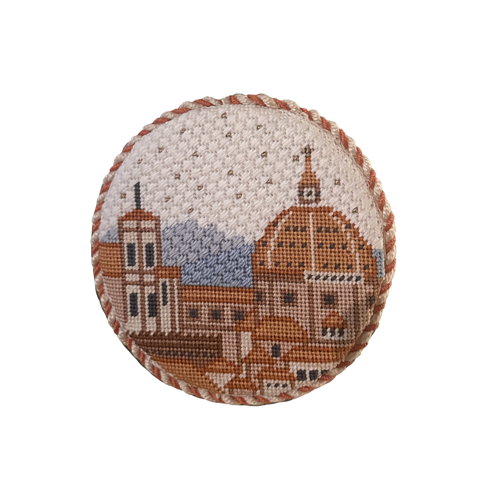
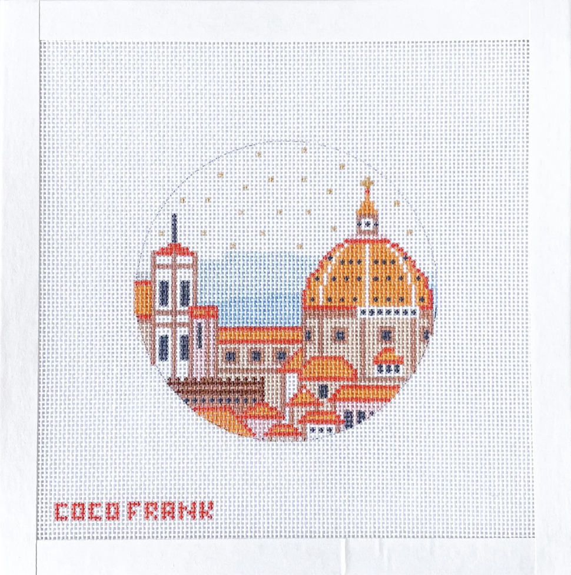

Needlepoint gives me an outlet for creativity.


When searching for a quiet hobby that allows me to mindlessly stitch, I always turn to needlepoint. Stitching goes slow, but can take up many hours without notice.